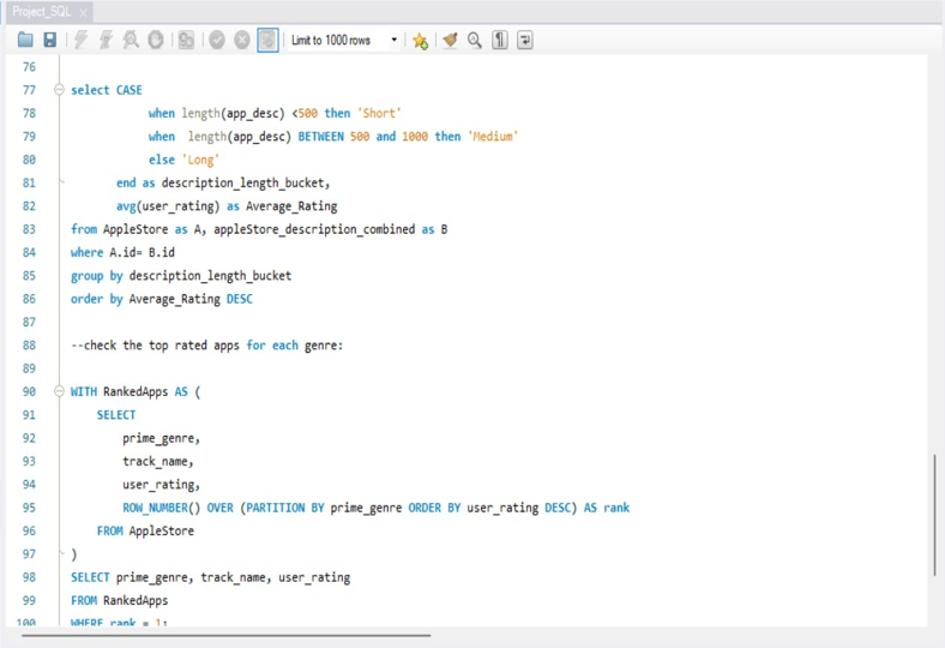

The Personality Classification System is a machine learning-based project designed to classify individuals' personalities using the Big Five Personality Traits model—Openness, Conscientiousness, Extraversion, Agreeableness, and Neuroticism. By analyzing user input, the system predicts personality traits, making it useful for applications like recruitment, social networking, and targeted advertising. Built using Python, it leverages libraries such as Pandas, NumPy, Matplotlib, and Scikit-learn for data processing, visualization, and model development. Future enhancements include integrating it with recruitment tools, enabling real-time personality prediction, and improving accuracy through advanced machine learning models.
August 2024 - December 2024

The Car Dealership Analytics and Prediction Dashboard empowers car dealerships with data-driven insights to optimize pricing, inventory, and customer targeting. Built using advanced data processing and visualization tools, the dashboard provides interactive visualizations like scatter plots, clustering diagrams, and bar charts. Key features include dynamic filters, predictive pricing models, and actionable insightsto enhance operational efficiency. Designed for user-friendliness, it offers clear metrics to guide strategic decisions, helping dealerships adapt to market trends and customer preferences.
 Patient Data Analysis.png)
This project analyzes a dataset of 1,500 OCD patients to provide insights that can improve treatment decisions. Using SQL, I enhanced the data quality through manipulation and feature engineering, and visualized the results with interactive Power BI dashboards. The dashboards highlight key trends such as patient demographics, compulsive behaviors, and the correlation between obsession types and their severity scores. This project showcases my skills in data processing and visualization, providing actionable insights for better understanding and managing OCD patient data.

This project features an interactive HR Analytics Dashboard built with Tableau, focused on analyzing employee data, attrition patterns, and workforce trends. The dashboard provides insights into employee behavior, retention, and performance , helping organizations make data-driven HR decisions. It offers interactive filtering for exploring data by department, tenure, and other factors. Using Tableau’s powerful visualization tools, the dashboard presents a user-friendly experience for understanding employee dynamics and improving retention strategies.

The Applestore Insights SQL project uses SQL to analyze Apple Store data, focusing on customer behavior, sales trends, and inventory. It identifies top-selling products, regional sales, and purchase patterns using techniques like CASE, JOINs, and GROUP BY to generate actionable insights, including revenue trends and growth opportunities.